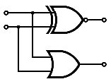

Comme vous le savez, nos processeurs sont capables de gérer plusieurs modes d'adressages bien différents. Parmi eux, certains modes d'adressages ont étés conçus pour faciliter l'implémentation de certaines structures de données, comme les tableaux, les structures, les tableaux de structures, les piles, etc. Ces modes d'adressages ont tous un point en commun : ils doivent calculer une adresse mémoire à partir de certaines informations, comme un indice, un décalage, etc.
Sur la majorité des processeurs, ce calcul est effectué soit dans l'unité de calcul, soit dans un circuit dédié aux calculs d'adresse, implanté dans les circuits chargés de communiquer avec la mémoire. Une instruction voulant utiliser ce genre de mode d'adressage devra donc s'effectuer en deux étapes : une étape de calcul d'adresse, et une autre qui accède à la mémoire. D'ordinaire, cet accès mémoire va atterrir dans la mémoire cache, et se terminera soit en Cache Hit, soit en Cache Miss. Il faut un certain temps avant de savoir si la donnée est bien présente dans le cache. Et ce temps est vraiment long.
Pour diminuer le plus possible ce temps d'attente, certains processeurs cherchent à diminuer le plus possible de temps mit à calculer l'adresse. C'est pour résoudre de petit problème que l'on a inventé les caches adressés par somme, aussi appelés Sum Adressed Caches. Avec eux, le calcul de l'adresse n'est plus nécessaire pour accéder à notre donnée. Voyons un peu ce que ces caches ont dans le ventre !
Au cas où vous n'auriez pas remarqué, on peut parfaitement considérer que notre mémoire cache est une table de hachage (et plus précisément une table associative), qui associe des adresses mémoires à des données. Une portion cette adresse mémoire, nommée le Tag, fait ainsi office de clé permettant de retrouver une donnée dans notre cache.
Caches Direct Mapped
Si vous vous souvenez de vos cours d'algorithmique, vous savez qu'il est possible d'implanter une table de hachage en utilisant un tableau. Pour retrouver notre donnée à partir de la clé, on va utiliser une fonction de hachage : celle-ci va prendre la clé, et va l'utiliser pour déterminer l'indice de notre donnée dans le tableau.
En Hardware, on dispose de l'équivalent d'un tableau : il s'agit d'une mémoire RAM. On peut parfaitement considérer qu'une RAM est un tableau de Bytes dont les adresses mémoires sont des indices. On peut donc utiliser une RAM en guise de cache; en ajoutant quelques circuits autour. Certaines mémoires caches sont implémentées d'une telle manière : il s'agit des mémoires Direct Mapped. D'autres mémoires caches sont conçues en rassemblant plusieurs caches Direct Mapped : ce sont les caches N-Ways Associative. Tout ce qui suivre sera applicable à ces deux types de caches.
Tags
La fonction de hachage est implémentée directement en matériel, dans des circuits spéciaux. L'adresse mémoire servant de clé va ainsi subir quelques modifications pour être transformée en indice (en adresse destinée à la mémoire RAM intégrée au cache). Généralement, la fonction de hachage est un simple modulo : certains bits de poids faible forment l'indice, et les autres servent de Tag. Et le reste sert à préciser la position de la donnée dans notre ligne de cache.
Il est évident que cette fonction de hachage n'est pas parfaite, et peut donner naissance à des collisions : on peut obtenir le même indice en appliquant la fonction de hachage sur deux adresses mémoires différentes.
Implémentation
Quoiqu'il en soit, notre mémoire cache Direct Mapped ressemble alors à ceci :
Une mémoire cache N-Ways Associative ressemble fortement à une mémoire cache Direct Mapped, avec tout de même quelques différences. Il y a notamment plusieurs mémoires RAM internes au cache. Mais passons, ce n'est pas très important pour la suite.
Comme on l'a vu plus haut, les caches direct mapped ou N way-associative, contiennent toujours une ou plusieurs mémoires RAM internes au cache, qui servent à stocker les données et les Tags. Cette mémoire RAM est composé comme toute les autres mémoires RAM : elle contient un décodeur, des bytes, et des tas d'autres choses. L'intérieur de notre mémoire RAM ressemble à ceci :
Exemple d'une mémoire de 4 cases mémoires avec une adresse de deux bits.
Dans ce qui va suivre, nous allons nous intéresser au décodeur : c'est lui qu'on va améliorer. Et quelques rappels sur ces décodeurs s'imposent.
C'est quoi ?
Pour rappel, un décodeur est un composant qui sélectionne un byte à partir d'une adresse codée sur n bits. Il doit répondre à plusieurs exigences :
Il doit manipuler une adresse de nbits : ce contrôleur a donc n entrées ;
notre adresse de n bits peut adresser 2^{n} bytes : notre contrôleur mémoire doit donc posséder 2^{n} sorties ;
chacune de ces sorties permettra de connecter ou déconnecter une case mémoire du bus ;
on ne doit sélectionner qu'une seule case mémoire à la fois : une seule sortie devra être placée à 1, et toutes les autres à zéro ;
et enfin, deux adresses différentes devront sélectionner des cases mémoires différentes : la sortie de notre contrôleur qui sera mise à 1 sera différente pour deux adresses différentes placées sur son entrée.
Exemple d'un décodeur à 3 entrée et 8 sorties.
On peut remarquer que toutes les sorties d'un décodeur sont numérotées : sur un décodeur possédant N entrées, nos sorties sont numérotées de 0 à 2^{N} - 1. Le fonctionnement de notre décodeur est très simple : il prend sur son entrée un nombre entier x codé en binaire, positionne à 1 la sortie numéroté x et positionne à zéro toutes les autres sorties.
Implémentation
Ce décodeur est, comme tous les autres circuits électroniques, conçu avec des portes logiques. Reste à savoir comment le concevoir... En réfléchissant bien, on sait qu'on peut déduire la sortie assez facilement en fonction de l'entrée. Si l’entrée vaut 0, la sortie mise à 1 sera la sortie 0. Si l'adresse vaut 1, ce sera la sortie 1. Et on peut continuer ainsi de suite. En clair : si l'adresse vaut N, la sortie mise à 1 sera la sortie N. Bref, déduire quand mettre à 1 la sortie N est facile : il suffit de comparer l'adresse avec N. Si l'adresse vaut N, on envoie un 1 sur la sortie, et on envoie un zéro sinon. Pour cela, j'ai donc besoin d'un comparateur spécial pour chaque sortie, et le tour est joué.
Certains modes d'adressages donnent directement l'adresse à laquelle on doit accéder (peut importe que celle-ci soit placées dans un registre ou dans une instruction). Mais d'autres ont besoin de calculer cette adresse. Et certains vont additionner un décalage à une adresse mémoire. Le décalage en question peut être un Indice de tableau, un Offset permettent de localiser une donnée dans une structure ou un cadre de pile, peut importe.
Ces modes d'adressages sont les suivants :
Indexed Absolute ;
Base + Index ;
Base + Offset.
Sur un cache ordinaire, l'addition est faite séparément du décodage.
D'ordinaire, l'addition est réalisée dans l'unité de calcul du processeur. Ce qui fait que le schéma du dessus est un schéma de principe, et ne doit pas être pris au pied de la lettre.
Bitwise Indexing
Pour éviter d'avoir à effectuer l'addition entre l'adresse-clé et l'Offset, certains concepteurs de mémoire cache ont donc cherchés à ruser en remplaçant cette addition par autre chose. Avec la techniques ordinaire, on calcule l'adresse de notre donnée via une addition, avant de lui faire subir une fonction de hachage pour retrouver l'emplacement de la donnée. Au lieu de cela, certains ont tentés d'inventer une fonction de hachage qui prendrait en entrée un couple Adresse / Offset. Certains ont essayés d'utiliser des opération Bitwise du style XOR, AND ou OR, etc.
Seulement, utiliser des opérations bitwise a un problème. Il arrive souvent que deux couples Adresse / Offset donnent au final la même adresse mémoire. Par exemple, le couple Adresse/Offset 11101111/0001 donnera la même adresse que le couple 11110000/0000. Logiquement, ces deux couples devront donner un indice identique. Mais ce n'est pas forcément le cas : il arrive que deux couples, donnant la même adresse mémoire, donnent des indices différents une fois passés par la fonction de hachage ! Autant dire que cela ne marchait pas fort. Il était toutefois possible de gérer ces situations, mais cela nécessitait quelques techniques de haute volée pour faire fonctionner la mémoire cache correctement.
Sum Adressed Cache
Mais d'autres chercheurs ont eu une meilleure idée : pour diminuer le plus possible ce temps d'attente, ils ont décidés de fusionner le décodage avec l'addition. Au lieu d'envoyer le résultat de l'addition au décodeur, on va envoyer les deux nombres, et notre décodeur vérifiera si la somme de ces deux nombres est égale à 0, 1, 2, etc. L'addition est en quelque sorte fusionnée dans le décodeur.
Principes et circuits
Comme on le voit, notre décodeur nouvelle version est composé de plusieurs circuits de base. Ils sont chacun capables de tester si la somme Adresse + Offset est égale à une constante. Si on sait créer ces circuits de base, il suffira d'en mettre plusieurs, de les calibrer convenablement, et le tour est joué !
Quelques formules
Pour créer un de ces circuit de base, on a besoin de savoir comment faire pour vérifier si la somme de deux nombres (l'adresse et l'Offset) est égale à une constante. Pour cela, on doit remarquer quelque chose : A + B = K peut aussi s'écrire comme ceci :
A + B - K = 0
D'après les règles du complément à deux, on sait que -K = \overline{K}+1. On peut donc remplacer -K par \overline{K}+1 dans la première équation. On trouve alors :
A + B + \overline{K} + 1 = 0
Ce qui est équivalent à :
A + B + \overline{K} = -1
Or, -1 s'écrit 11111111...111 en binaire. Ce qui fait que l'on cherche à vérifier que :
A + B + \overline{K} = 111111...1
En clair, il nous suffit d'additionner nos trois nombres et vérifier que tous les bits du résultat valent bien 1.
Carry Save
Sur le principe, cela semble mal parti : on remplace une addition et une comparaison, par deux additions et une comparaison. Mais ces deux additions et cette comparaison peuvent s'effectuer très rapidement en utilisant une représentation un peu spéciale du résultat : le Carry Save. Avec cette représentation, on va pouvoir additionner plusieurs nombres et obtenir un résultat représenté en Carry Save bien plus rapidement qu'en temps normal. Pour effectuer cette addition en Carry Save, on additionne les bits de même poids, et on stocke le résultat sur plusieurs bits, sans propager les retenues.
Par exemple, regardons ce qui se passe avec trois nombres. L'addition de trois bits en Carry Save va donner un résultat sur deux bits : une retenue, et une somme. En additionnant chaque bit de nos trois nombres uns par uns, on obtient la somme des trois nombres enCarry Save.
Le résultat peut être interprété comme étant composé de deux résultats : un nombre composé des sommes des bits, et un autre composé des retenues.
Cette addition de trois nombres en Carry Save n'est pas compliquée à faire. Naïvement, on se dit qu'il suffit de créer un petit circuit capable d'additionner trois bits et d'en placer plusieurs les uns à coté des autres.
Circuit total
Il ne nous reste plus qu'à vérifier que la somme de la retenue et de la somme de deux bits donne bien -1.
Cela n'est possible qu'à une condition : entre le bit C_{i-1} et le S_i, un seul doit valoir 1. On doit donc créer un circuit pour ça. Faites sa table de vérité, vous tomberez sur une porte XOR.
Et cela doit être valable pour tous les bits du nombre. En clair, on doit effectuer un gros ET entre toutes les sorties des Portes XOR : on obtient une sortie de notre décodeur.
Il ne reste plus qu'à dupliquer ces circuits, en modifiant l'additionneur (pour régler la constante), et le tour est joué !
Comme on le voit, l'addition disparait et est remplacée par quelques portes logiques en plus. Autant dire que l'on gagne tout de même un petit peu en rapidité. Mais ne vous affolez pas : on gagne assez peu, juste de quoi gagner un cycle d'horloge sur un accès au cache L1/L2. Autant dire que ce n'est pas une technique miracle pour avoir un cache accessible rapidement.
Optimisations
Le décodeur que l'on a vu plus haut est franchement simpliste, et on peut lui apporter de nombreuses améliorations. Voyons lesquelles.
Plus haut, on a utilisé des additionneurs complets pour additionner l'adresse, l'Offset, et notre constante. Ces additionneurs complets sont assez lourds et utilisent pas mal de portes logiques. Pour votre culture générale, un additionneur complet est souvent implémenté comme ceci :
Mais vu que notre troisième nombre est une constante, on n'a pas vraiment besoin d'additionneurs complets : un simple circuit qui additionne deux bits et qui supposent que le bit du troisième nombre (la constante K) vaut 1 ou 0.
Notre premier circuit, qui additionne deux bits, en supposant que le bit de la constante vaut zéro a la table de vérité suivante :
Bit A
Bit B
-
Retenue
Somme
0
0
-
0
0
0
1
-
0
1
1
0
-
0
1
1
1
-
1
0
On obtient alors le circuit suivant :
Le second circuit, qui additionne deux bits, en supposant que le bit de la constante vaut 1, a la table de vérité suivante :
Bit A
Bit B
-
Retenue
Somme
0
0
-
0
1
0
1
-
1
0
1
0
-
1
0
1
1
-
1
1
On obtient alors le circuit suivant :

Bien que cette petite amélioration ne semble pas vraiment efficace, presque tous les caches des processeurs actuels sont basés sur ce principe. Le premier processeur commercial qui a implanté ce genre de cache était le processeur Ultra-SPARC III. Depuis, de nombreux processeurs RISC utilisent ce genre de cache, afin de gagner en performances.